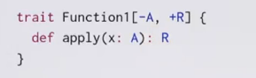
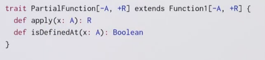
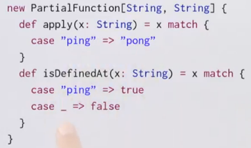
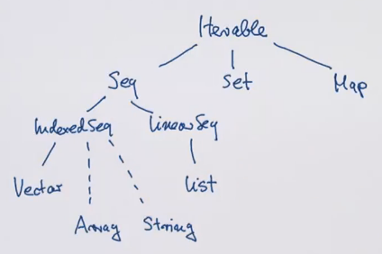
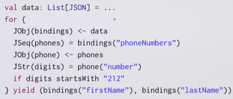
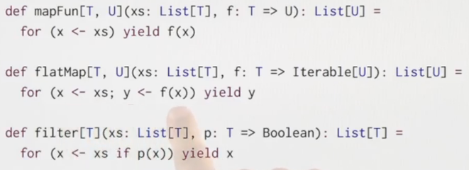

Recap: Functions and Pattern Matching
case classes
ex: json json objects can be seq, num, str, bool,...
⇒ represented as abstract class and case classes.
pattern matching

→ question: what is the type of the {case(key, value)=>"..."} clause?
it is (JBinding => String) type, which is a shorthand for Function1[JBinding, String].
Function1 Trait

subclass a function type
function types can also be extended !

element accessing can be written as function calls because Seqs are functions!
Partial Match
if there is no match → throw MatchError
val f: String=>String = {case "ping" => "pong"}
f("ping") // no pb
f("abc") // MatchError
⇒ define f as partial function
val f: PartialFunction[String,String] = {case "ping" => "pong"}
f.isDefinedAt("ping")
f.isDefinedAt("abc")
isDefinedAt is a method for the PartialFunction class.

The f definition is translated to:

But the PartialFunction will only apply for level 1:

Recap: Collections
scala collections hirarchy:

collections share some general methods (core methods):
- map
- flatMap
- filter
- foldLeft/foldRight
(idealized) implementation of map and flatMap on Lists:


For expressions
for-expr can simplify combinations of core methods.

the lhs of a generator can also be a pattern!

pat <- expr
is translated to :
x <- expr withFilter {case pat => true; case _ => false
} map {case pat => x}
1.1 - Queries with For
for notation is equivalent to common ops on databases(ex. sql).
ex. books in library
case class Book(title: String, authors: List[String])
query1: books with author name is "Bird"
for( b<-books; a <- b.authors if a startsWith "Bird,")
yield b.title
query2: books with "Program" in the title:
for( b<-books if b.title indexOf "Program" >=0)
yield b.title
query3: names of authors who wrote >=2 books
for{
b1 <- books
b2 <- books
if b1!=b2
a1 <- b1.authors
a2 <- b2.authors
if a1==a2
} yield a1
→ pb: the authors will be doubled → b1,b2 and b2,b1
⇒ change line 3 to b1.title < b2.title
→ still pb: print 3 times if authors write 3 books...
⇒
sol1. use distinct function
sol2. decalre books as Set instead of List.
1.2 - Translation of For
for expressions → higer order functions
map, flatMap, filter can all be implemented with for expression:

In reality: scala translates for expr to map/flatMap/filter.
implemention of for-expr: 3 rules
- rule 1: in for(..) only a simple generator
for(x <- l1) yield e2
is translated to: l1.map(x => e2)
- rule2: in for(..), followed by the generator there is a filter
for(x <- l1 if f; s) yield e2 //s is seq of other generators and filters
is translated to:
for( x <- l1.withFilter(x=>f) ) yield e2
- rule3: in for(..), starts with 2 generators → flatMap
for( x<-l1; y<-l2; s) yield e3
is translated to:
l1.flatMap( x => for(y<-l2; s) yield e3 )
example:
for{
b <- books
a <- b.authors if a startsWith "Bird"
} yield b.title
translated to:
books flatMap (
b => b.authors.filter( a => a startsWith "Bird").map(y=>y.title)
)
NB: for expr is not restricted to collections, it supports any types with map/flatMap/withFilter method. ⇒ use for expr for your own types as well.
1.3 - Functional Random Generators
goal: use for expr on rand generators.
for expr support any type with map/flatMap/filter ⇒ ex. rand value generator.
generate rand value of type T:
trait Generator[+T] {
def generate: T
}
first implement Generator[Int], then use this to implement booleans, pairs, lists, sets, trees,......
val integers = new Generator[Int]{
val rand = new java.util.Random
def generate = rand.nextInt()
}
val booleans = new Generator[Boolean{
def generate = integers.generate > 0
}
val pairs = new Generator[(Int, Int)]{
def generate = (integers.generate, integers.generate)
}
→ can we avoid the new Generator[...] ?
ideally we want to write booleans as pairs as:
val booleans = for( x <- integers ) yield x>0
def pairs[T,U](t: Generator[T], u: Generator[U]) =
for{x <- t; y <- u} yield (x,y)
the for expr will be translated to map/flatMap/filter...
⇒ define map and flatMap on the Generator trait so that it supports for expr!
trait Generator[+T]{
self => // syntax: `self` is an alias of `this`
def generate: T
def map[S](f: T=>S): Generator[S] =
new Generator[S]{
def generate = f(self.generate) // can't use `this` here: inf loop
// or use Generator.this.generate
}
def flatMap(f: T=>Generator[S]): Generator[S] =
new Generator[S]{
def generate = f(self.generate).generate
}
}
ex. the booleans expression:
val booleans = for (x<-integers) yield x>0
is translated to:
val booleans = integers map (x=>x>0)
which is then expands to:
val booleans =
new Generator[Boolean]{
val f = (x => x>0)
def generate = f(integers.generate)
}
after reduction, the expression is:
val booleans = new Generator[Boolean{
def generate = integers.generate > 0
}
which is the initial implementation...
other base Generators

(The T* syntax is variable parameter)
rand List Generator
def lists: Generator[List[Int]] = for{
isEmpty <- booleans
list <- if (isEmpty) emptyLists else nonEmptyLists
} yield list
def emptyLists = single(Nil)
def nonEmptyLists = for{
head <- integers
tail <- lists // recursive call to `lists`
} yield head::tail
rand (binary) Tree Generator
two types of tree nodes: leaf or inner node
def trees: Generator[Tree] = for{
isLeaf <- booleans
tree <- if(isLeaf) leafs else inners
} yield tree
def leafs: Generator[Leaf] = for{
x <- integers
} yield Leaf(x)
def inners: Generator[Inner] = for{
l <- trees
r <- trees
} yield Inner(l, r)
Application: random testing
test: check postconditions (expected results)
→ generate random test inputs
a generic wrapper:
def randTest[T](g: Generator[T], numTimes: Int=100)(testfcn: T=>Boolean): Unit = {
for( i <- 0 until numTimes){
val value:T = g.generate
assert(testfcn(value), "test failed for "+value)
}
println("passed" + numTime + "tests")
}
ScalaCheck
instead of writing tests, write properties that are assumed to hold.
forAll {
(l1:List[Int], l2:List[Int]) =>
l1.size + l2.size == (l1++l2).size
}
1.4 - Monads
from last section: not only collections, but also any type with map and flatmap can use for expr ⇒ monads.
flatMap ("bind") and unit, and satisfy some laws.
train M[T]{
def flatMap[U](f: T=>M[U]): M[U]): M[U]
}
def unit[T](x:T): M[T]
examples:
Listis a monad,unit(x) = List(x)Set, withunit(x) = Set(x)Option, withunit(x) = Some(x)Generator, withunit(x) = single(x)
map can be defined as a combination of flatMap and unit:
m map f == m flatMap (x => unit( f(x)) )
Monad laws
- associativity
(m flatMap f) flatMap g == m flatMap ( x => f(x) flatMap g )
↔ (x+y+z) = x+(y+z)
- left unit
unit(x) flatMap f == f(x)
- right unit
m flatMap unit == m
the Try type
We define a Try class, which is similar to Option class.
abstraxt class Try[+T]
case class Success[T](x:T) extends Try[T]
case class Failure(ex: Exception) extends Try[Nothing]
we can write Try(expr) to give a computation a try, by implementing the apply method of object Try:
object Try{
def apply[T](expr: =>T): Try[T]= // expr is passed BY NAME, otherwise will cause exception in eval
try Success(expr) // java syntax of try-catch
catch{ case NonFatal(ex) => Failure(ex) }
}
}
if Try is a Monad ⇒ can be written in for expr:

⇒ define map and flatMap on Try type.

question: is Try a monad with unit(x)=Try(x)?
⇒ no, left-unit fails: Try(expr) flatMap f != f(expr)
(lhs never nonfatal exception, but rhs will raise)
Try is not a monad, but it can still use for expr...
Conclusion
for exprs are useful not only for collections: Generator, Option, Try
Disqus 留言